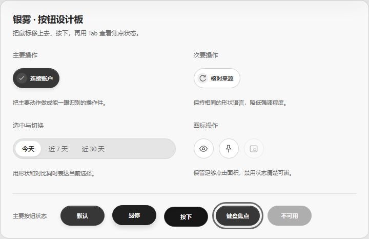
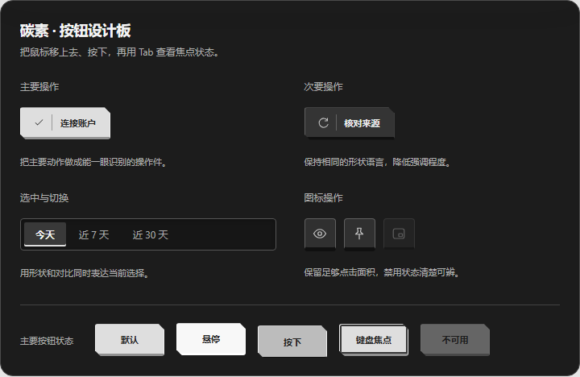
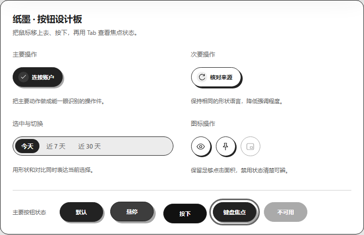
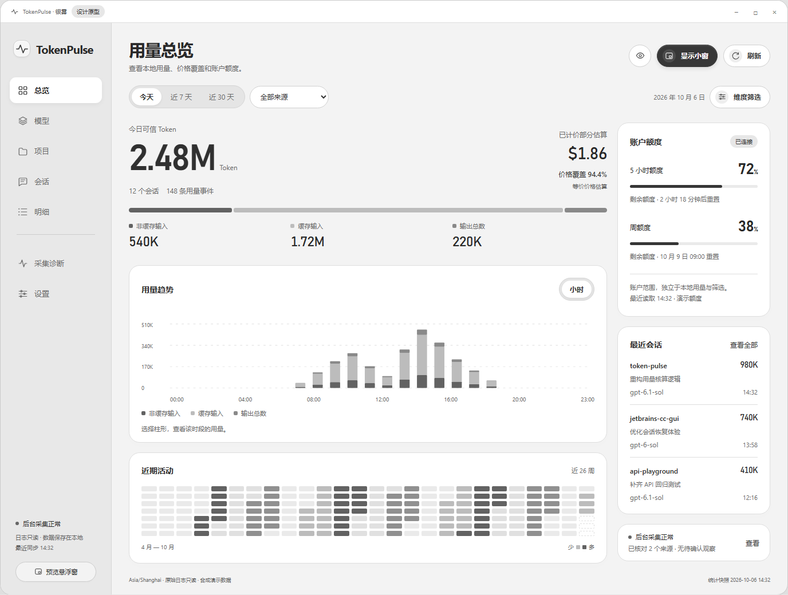
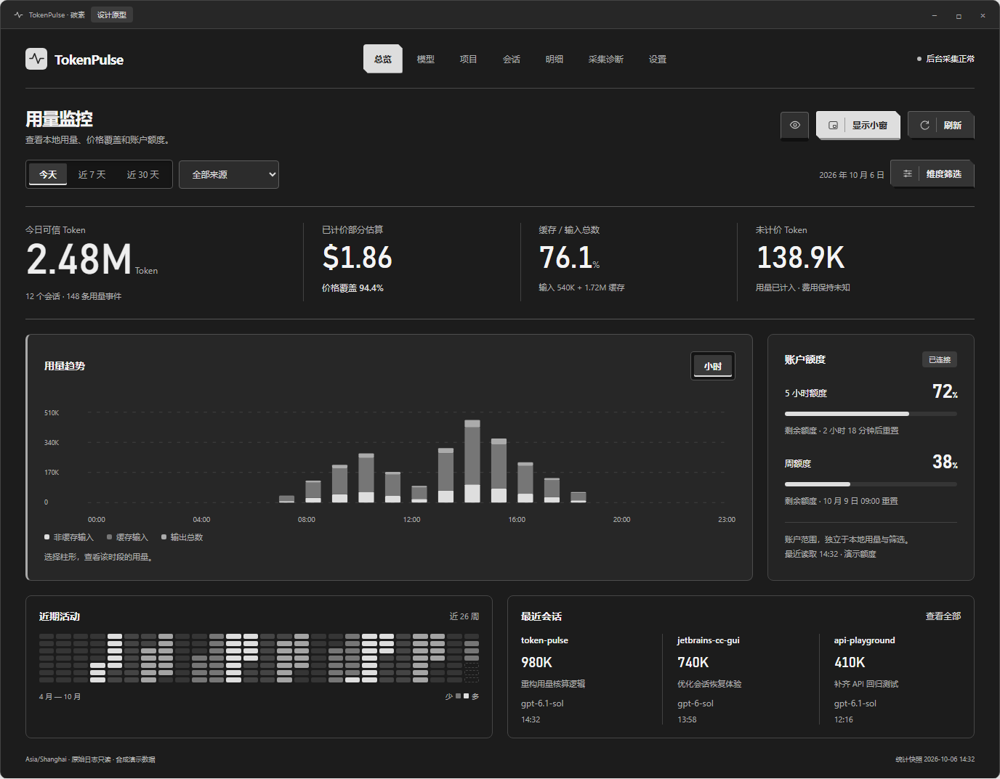
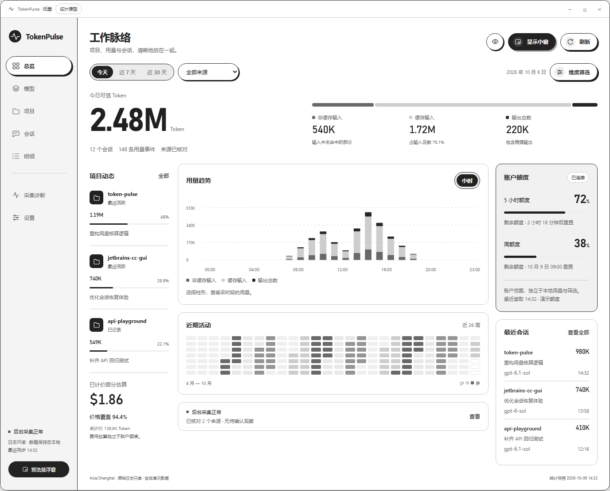

先看按钮的性格，再看整个界面的感觉。三版都可以点开体验。
浅银胶囊 · 内嵌图标 · 轻微下沉

圆润，但有明确的结构和层次。
石墨切角 · 实体底边 · 机械按压

更像一组能操作的控制件。
黑白印章 · 偏移阴影 · 利落反馈

轮廓更鲜明，个性也更直接。
浅银侧栏，白色工作区，趋势优先。

精致、轻盈，适合日常使用。
横向导航，通栏读数，大幅用量趋势。

沉稳、专注，偏开发者监控工具。
纯白工作区，黑色操作，项目活动优先。

个性、鲜明，偏独立桌面应用。